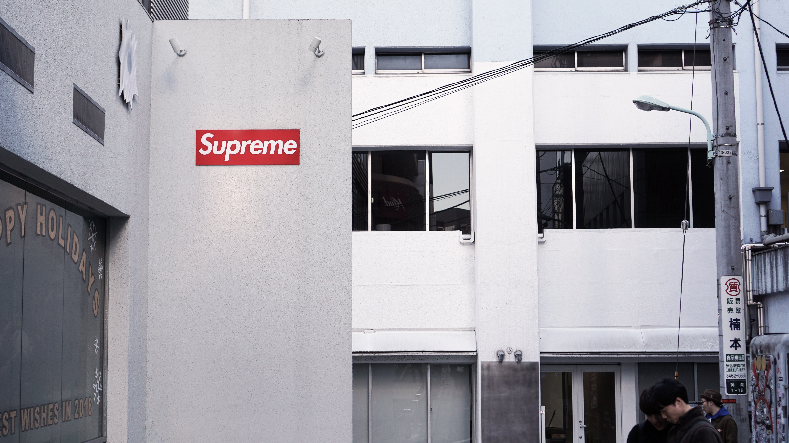

- 미니멀리즘
- 아메카지
- 스트릿
스타일
패션의 종류와 옷
스트릿 (street fashoin)
스트릿패션이란 말 그대로 길거리에서 볼 수 있는 패션들을 의미하는데, 단순히 모든 옷들이라기 보다는
힙합이나 보드 문화의 기반을 한 패션입니다. 가장 최선두에서 스트릿 패션을 이끌던 브랜드에는 슈프림, 팔라스, 베이프,스투시등이 있습니다.
과거에는 주류적인 패션 문화보단 약간 서브패션의 느낌으로 입는사람들만 입었었는데, 지금에 와서는 패션신의 중심부에 들어와서
패션신의 중심에 서 있다고 볼 수 있습니다.
